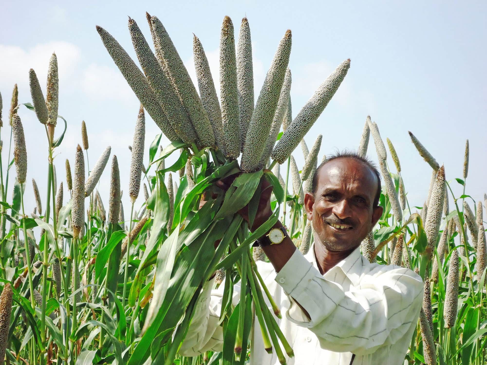
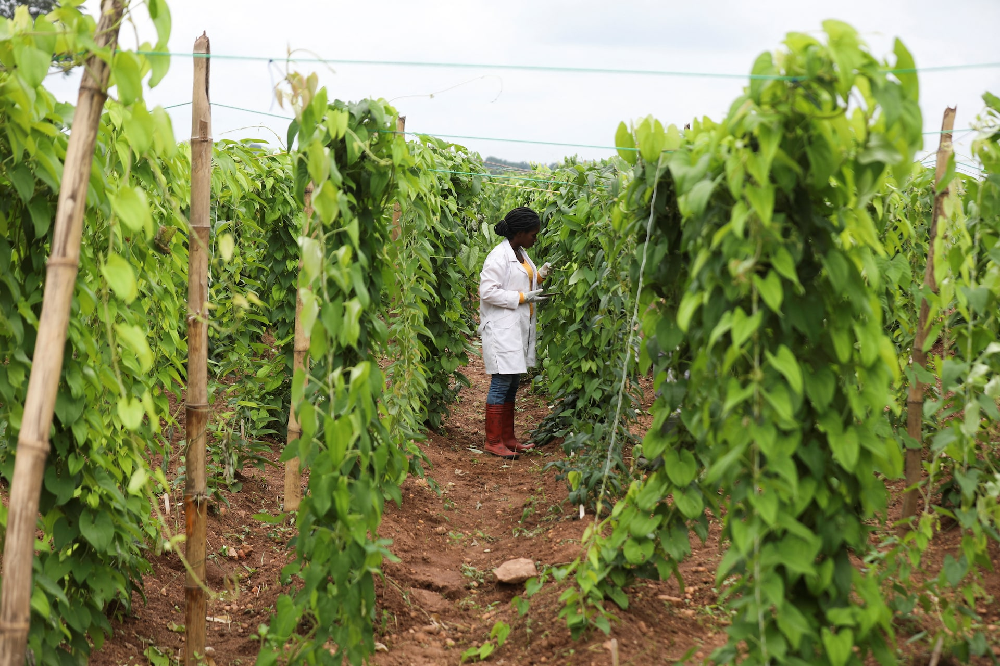

Lecture 4: Perturbations to the Carbon Cycle
![]()
- The carbon cycle and climate change: a brief overview and history of our understanding of climate change.
- The contributions of key historical figures such as Arrhenius, Callendar, and Keeling.
- The role of the carbon cycle in climate change.
- Atmospheric response in heat content.
- The role and response of the ocean in the carbon cycle.
- Future scenarios for Earth.
This lecture aims to provide you with a comprehensive understanding of the carbon cycle and its central role in driving climate change. You will explore the history of climate science, focusing on key figures like Svante Arrhenius, Guy Callendar, and Charles Keeling, whose contributions shaped our current understanding of global warming and atmospheric carbon. In the lecture, we will also cover how the carbon cycle influences the Earth’s heat content, the atmospheric and oceanic responses to increased carbon levels, and how these processes contribute to global change. Finally, you will briefly look at some future climate scenarios so as to develop insight into the potential consequences for Earth’s ecosystems, with a particular focus on the implications for plant ecophysiology.
After you’ve mastered this lecture’s content, you will be able to:
- Provide an overview of the carbon cycle and explain its importance in the context of climate change, particularly how carbon moves between the atmosphere, biosphere, oceans, and lithosphere.
- Recall the contributions of key historical figures—Svante Arrhenius, Guy Callendar, and Charles Keeling—in shaping the science of climate change and the importance of their work in modern climate models.
- Explain the role of the carbon cycle in driving climate change, including how anthropogenic carbon emissions disrupt natural carbon processes and contribute to global warming.
- Explain the atmospheric response to increased carbon dioxide, focusing on the increase in heat content and the subsequent changes in global temperature and weather patterns.
- Describe the role of the ocean in the carbon cycle, including its ability to act as a carbon sink, how it moderates global temperatures and pH, and the long-term consequences of oceanic carbon absorption on marine ecosystems.
- Evaluate future climate change scenarios, discussing the potential impacts of continued carbon emissions on Earth’s climate, ecosystems, and plant ecophysiology, and the importance of mitigation strategies.

1 Introduction: The Carbon Cycle
So, for today’s lecture, we are going to talk a bit about the importance of the carbon cycle to plants. Of course, the carbon cycle is extremely important to plants because it unites light, carbon, and water in the process of photosynthesis. But we also know, of course, that the carbon cycle has changed over the last 250 or so years as a result of industrialisation. It is important, then, to understand the physics and the changes to the Earth system that are leading to this changing carbon cycle.
When I speak about the carbon cycle, the main way people are affected is via climate change, which is a small subset of what we call global change. Global change is comprised of all those various things we referenced at the end of Tuesday’s lecture, including biodiversity loss, changes to the hydrological cycle, the nitrogen and phosphorus cycles, and all of those aspects discussed in the planetary boundaries set of lectures. So, the carbon cycle and climate change form one of those aspects of global change.
As we have seen, we are already rapidly accelerating towards thresholds—thresholds which, if exceeded, will take us into uncharted and dangerous territory. In fact, we are arguably already there. I’ll explain to you shortly that no modern human has ever experienced the kinds of climatic phenomena that we are experiencing today, so it is quite dangerous for people and for much of the rest of life on Earth.
Today I aim to provide you with an overview of climate change: what is known about climate change—not so much its contemporary science, but more the history, seeing when people first started thinking about it. Today’s lecture will not be particularly long. I want to talk about the history of climate change, what we know today, and to contextualise our current circumstances within what is known about human development over the last 10,000 or so years.
2 Climate Change: Not a Recent Realisation
What we know about climate change is not recent, in the sense that the idea of climate possibly changing—or at least the understanding that gases in the atmosphere contribute towards climate change—has been around for a long time. When I refer to climate change, I generally mean that, on average, the world’s climate is warming up. The average is an important concept, of course, because there are places on the planet that are actually cooling down slightly.
For instance, around the coastline of South Africa, from De Hoop all along the west coast towards the border with Namibia, the ocean is in fact cooling down in certain places. So, climate change, though global temperatures are on average rising, is experienced differently in different regions—it is heterogeneous, not evenly distributed.
Projections for the future of Africa, for example, show that in the next 50 to 100 years, Africa may be warmer by six to seven °C (°C), which is far more than the average elsewhere on the planet. Thus, Africa is experiencing a larger degree of climate change relative to the rest of the world; but globally, the net warming is positive.
3 Historical Development of Climate Change Science
3.1 The First Experiments and Realisations

Our understanding of how the world is changing, and how certain gases contribute to that change, started in the late 1800s. There are a few important names to remember: Fourier, Pouillet, Tyndall, and Arrhenius among them.
{kind=link}
{kind=link}
These individuals worked more than 150 years ago on the basic physics and atmospheric chemistry associated with climate change. The scientific foundation explaining our current understanding of climate change thus existed over a century ago.

The first notable experiment was published in 1856 by Eunice Foote, an American scientist who performed a very simple experiment. She placed different kinds of gases in jars, including normal air, water vapour, and what was then called “carbonic acid”—that is, carbon dioxide. She exposed these jars to sunlight and measured, using a thermometer, how quickly each jar warmed up depending on its contents. She observed that the jar containing carbon dioxide became significantly warmer than the others and, when removed from the sun, took much longer to cool down.
{kind=link}
Foote concluded that an atmosphere containing higher concentrations of carbon dioxide would give the earth a higher temperature. She speculated that if, at some period in history, the air had a higher proportion of carbon dioxide, increased temperature must necessarily have resulted. She deduced that, in deep history, when there was more carbon dioxide in the atmosphere, the earth would have been warmer. Water vapour, she found, acted in a similar manner. Both gases trap heat and retain it longer, suggesting that early earth, with higher atmospheric concentrations of these gases, would have been warmer as a result.
3.2 John Tyndall’s Confirmation
{kind=link}
A few years later, John Tyndall, an Irish physicist known for the Tyndall effect, conducted similar experiments without knowledge of Eunice Foote’s prior work. Tyndall expanded on her findings with more detail and precision. He investigated not only carbon dioxide and water vapour, but also how different wavelengths of light, particularly in the infrared spectrum, interact with various gases.

According to his experiments, many greenhouse gases, such as carbon monoxide, methane, nitrous oxide, ozone, carbon dioxide, and water vapour, have different abilities to absorb radiant energy within wavelengths from about one to fifteen micrometres. These gases are present in the atmosphere and are increasing over time due to human activity, such as the burning of fossil fuels.
Tyndall showed, for instance, that carbon monoxide absorbs little infrared radiation until around five micrometres, where its absorbance spikes. Methane traps heat at different points, mostly at around 3.2 and 8.5 micrometres. The absorbance of these gases means that they capture certain wavelengths of infrared energy, which translates into heat trapped within the atmospheric system.
All of these different gases, present in the atmosphere all the time, are able to trap heat from radiation at various characteristic wavelength ranges. Tyndall’s work, alongside that of Eunice Foote, provides the foundational experimental evidence for our current understanding of how atmospheric gases contribute to the greenhouse effect.
3.3 Questions on Measurement Techniques
Student Question: How was absorbance measured and how were these gases extracted from the atmosphere?
Their measurement techniques relied on instruments that were precursors to today’s spectrophotometers—simpler, but based on similar principles. They used prisms to diffract light into a spectrum and would then measure the intensity of light as it emerged, with different components measured by suitable sensors. The nature of the instrument is not completely clear to me at this moment, but it would rely on diffraction to create measurable separations in the light. As we discuss photosynthesis later, we’ll encounter analogous experiments, some of which employed phototactic or aerotactic bacteria as biological sensors of oxygen production, indirectly inferring light absorbance at certain wavelengths.
Today, we use instruments such as an IRGA—an infrared gas analyser—for precise measurement of greenhouse gases. This involves shining a beam of infrared light at a known wavelength through a tube filled with atmospheric gas. The decrease in intensity from the source end to the detector is the absorbance, from which one can infer the concentration of greenhouse gases present. Modern detectors, such as those in spectrophotometers, are highly sensitive and can be tuned to specific wavelengths for meticulous measurement.
Student Question: Was the experiment conducted in the dark?
The experiment could be conducted in the dark; however, visible light does not interact with greenhouse gases in the way infrared does. Only infrared radiation is relevant here. Even when it appears dark (at night), there is still plenty of infrared radiation in the environment. The critical factor in the experiment is to ensure that only the intended beam of infrared radiation interacts with the gas in the tube, with other sources of infrared minimised or accounted for, so that only the absorbance by the test gas is measured.
3.4 Svante Arrhenius and The Model of Earth Systems
{kind=link}
A few years after Tyndall, Svante Arrhenius, a name known also from chemistry for his work on pH and ionic dissociation, extended previous findings. Instead of confining his interpretation to the laboratory, Arrhenius realised that by understanding how gases absorb infrared radiation, he could extrapolate an estimate of how carbon dioxide concentrations affect temperatures at the earth’s surface itself—not just in a jar.
His approach was still crude but remains the foundation of climate change science: the idea that by measuring carbon dioxide concentrations, one could estimate corresponding changes in earth’s surface temperature. Arrhenius thus moved climate change science from the realm of curiosity towards large-scale understanding, showing its importance for the environment experienced by both humans and plants.
3.5 Early Recognition of Human Influence on Climate
{kind=link}
At the beginning of the twentieth century, this knowledge began to enter public discourse. In 1912, a newspaper article in New Zealand speculated for the first time that the burning of coal—combining carbon with atmospheric oxygen to produce CO2—would eventually lead to planetary warming, based on Arrhenius’s work. This early speculation tied industrial emissions to potential climate consequences.
{kind=link}
{kind=link}
Proving more concrete was the work of Guy Callendar, an engineer, who in the early twentieth century estimated the increase in mean global temperature due to artificial addition of CO2 from burning coal. His calculations put the warming effect at just 0.003°C per year [attention: this value is lower than modern-day estimates based on recent emissions], a figure so small it was easily overlooked at the time and treated as a curiosity rather than a pressing concern.
{kind=link}
Following Callendar, Gilbert Plass added more rigour to Arrhenius and Tyndall’s work, analysing the specific heat-trapping contributions of various greenhouse gases to the atmosphere, though there was still little hard evidence connecting atmospheric CO2 to observed temperature increases, due to the absence of accurate measurements of global CO2 concentrations.
3.6 Direct Measurement: Charles Keeling and the Keeling Curve
{kind=link}
It was not until Charles Keeling, an oceanographer, began careful direct measurements of atmospheric CO2 in Hawaii, that the relationship between emissions and atmospheric composition became irrefutable. On the summit of Mauna Loa, he established an observatory and, year after year, measured CO2 concentrations.
{kind=link}
{kind=link}
The resulting data showed not only an annual zigzag pattern (seasonal variation in CO2), but a clear, uninterrupted upward trend. In 1958, CO2 was measured around 315–318 ppm; today it is at about 420 ppm, and climbing.
Keeling’s measurements revealed that CO2 is continually increasing due to ongoing fossil fuel combustion, deforestation, and industrial activity. This increase is observed even four kilometres deep in the ocean, showing that every part of the planet is being affected—there is nowhere immune to the effects of this rising CO2 concentration.
If humanity suddenly switched to 100% renewable energy, the rate of increase in CO2 would slow but not stop; some further increase is effectively locked in, leaving the question merely about how quickly or slowly things worsen. The reality is that such an overnight global switch is currently politically and practically impossible, so the future likely lies somewhere between worst-case and best-case scenarios.
3.7 The Effect of COVID-19 Lockdowns
Student Question: Did the COVID-19 lockdowns have a measurable effect on the CO2 trend?
During lockdown, pollution and emissions did decrease temporarily, with satellite data showing a significant blip in atmospheric pollutants over South Africa, for instance. However, as restrictions eased, industries sought to compensate for lost time, causing emissions to rebound quickly. Thus, any effect on the overall CO2 curve is likely to be negligible; the long-term trend remains upward. Future data will clarify whether there is any observable dip due to lockdown, but I do not expect a significant long-lasting deviation.
4 The Global Nature of the Carbon Cycle
It is worth remembering that the atmosphere is a globally coupled system. While Keeling’s observatory in Hawaii provides the longest-running data set, simultaneous measurements in Antarctica, South Africa, and elsewhere show parallel increases. CO2 added to the atmosphere anywhere will be detected everywhere after only a short delay, as air mixes globally.
Government policies and decisions at all levels—including in South Africa—thus affect the planet as a whole. Local restrictions on distributed solar energy, for example, have global ramifications, demonstrating the interconnectedness of carbon emissions.
5 Assignment: The Seasonal Fluctuation of CO2
To end today’s lecture, I have a small assignment for you, which will count towards your continuous assessment mark. I want you to consider the ‘zigzag-like’ pattern on the Keeling Curve, where every year CO2 rises and falls in a regular cycle, yet year after year the whole curve trends upward.
Please write a brief explanation—perhaps a paragraph, half a page—describing why CO2 is low in January, peaks around April or May, and drops again toward September. What accounts for this seasonal pattern? Your answers are due by Friday at 11:55 pm, to be submitted via IKAMVA. I’ll send details of the formatting requirements. This ties directly to the topic of this module and is a question that integrates several core ideas we have discussed.
If you have any questions, please let me know. We will pick up on the theme of climate change in Monday’s lecture, delving further into its scientific, ecological, and societal impacts.
6 The Keeling Curve and the Historical Context of CO2
Let me continue from where I left off last time. I ended with a discussion on the graph displaying the increase in carbon dioxide in the atmosphere over the last sixty or so years. This graph, as you see it there, shows a wiggly line rising steadily from 1958 to the present day. Eventually, this plot became known as the Keeling Curve, named after the scientist who originally began collecting the data behind it—Charles Keeling. Today, the Keeling Curve stands as the basis of our modern understanding of climate change, backed by this and similar sets of observations.
What’s happened in the intervening sixty years is that people have managed to extend this graph further to the left, using various scientific methods that allow us to peer deeper into our planet’s history. We can now look further back in time and, similarly, using global climate models, we are even able to project forward, about a hundred or a hundred and fifty years into the future. After we are all gone, we do have a reasonable degree of certainty about what the future world will be like, at least with regard to the climate, as the mathematics and science align quite reliably. We’ll delve into the predictive capacity of these models later.
The important point to note now is that in the Keeling Curve, the small section we previously focused on is just the recent part, essentially the right-hand section of this extended timeline, whereas the area labelled “10 to 0” corresponds to the last ten thousand years—the era of recorded human civilisation. I’ll display another graph shortly that extends even further back, but the take-home message is that the vast majority of what we know as human history and civilisation falls within these last ten thousand years.
7 Human Development and Climate Stability

It was during this period—about ten thousand years ago—that all the hallmarks of modern humanity started to emerge. Towns and cities arose, agriculture began, and the domestication of animals took place. This was also when the famous cave paintings were made in places like France and northern Europe, with a few even older examples elsewhere.
Most fundamentally, everything we recognise as human development has occurred within the last ten thousand years. Around six to five and a half thousand years ago, we start seeing the first written records, preserved on early scripts and papyrus scrolls. This is also the period when the Egyptian pyramids were constructed. About two thousand years ago, some dude called Jesus Christ was also born, or at least the idea of him as some important figure was recorded, during this timeline. In the two millennia since, he has developed for himself quite a following of sheep.
My point is that all recorded human history has developed while atmospheric CO2 levels remained below around 250 to 260 parts per million. Nothing in the archaeological or historical record suggests modern humanity has ever experienced—and certainly never thrived in—CO2 conditions higher than that. This is the point of reference.
Today, however, we’re above 400 parts per million—currently about 420. No modern human has ever lived in such a high-CO2 world. Humanity developed in a period of low, stable CO2, but now CO2 concentrations are soaring, and people find themselves in truly unprecedented conditions. While our models give a solid sense of how Earth’s systems—like temperature, precipitation, sea levels, and winds—will behave, we cannot say with confidence how humans will cope socially, physiologically, or culturally with this “uncharted territory”. I’ll show you yet another graph on this shortly.
8 Climate Change in Deep Time

If we push our perspective further back—ten thousand years ago to 800,000 years ago—the data show a recurring pattern of rises and falls in CO2 and global temperatures. These are the glacial and interglacial periods, tied to natural climate cycles. You can see it on the graphs—ups and downs corresponding to ice ages and warmer interglacial phases. When CO2 levels are high, we see polar ice caps melting and the world resembling its form from about two centuries ago, before recent melting recommenced. When CO2 drops, temperatures plummet and ice ages resume.
Climate change sceptics or deniers often point out, “the climate has always changed!”, and they’re not incorrect in the basic sense—this graph illustrates that. However, at no point in the last 800,000 years did CO2 ever reach today’s levels. It fluctuated between about 180 and 260 parts per million, never once exceeding 300, and certainly never surpassing 400. We are, in measurable terms, in entirely novel territory.
Hominids—our human-like ancestors—appeared around 160,000 to 170,000 years ago; modern humans some 70,000 years back; human societies about ten thousand years ago. Societal development correlated closely with periods of climate stability, which in turn relied on relatively constant atmospheric CO2. Now, that stability has ended.
9 Observed Temperature Rises
{kind=link}
Let’s look at a visual representation of temperatures recorded over the last 100 to 120 years. If you animate these records, you see the starting point near 1850; as you progress towards the present, temperatures climb. The warming trend has clearly accelerated over just the last three decades. At first, annual increases were minor, but from the 1970s onwards, the rate of temperature rise steepens dramatically. At present, we’re even further down this trajectory—you can easily project future trends from the graph.
10 Why Climate Change Matters: Beyond Just Temperature

Why do I discuss climate change so persistently? Its impact is not merely a matter of rising average temperatures. As I explained previously, warming is not uniform— some regions experience much greater change than others. Globally, however, the average is up. The knock-on effects are far-reaching.
- Precipitation Patterns: Rainfall will increase in some areas, but countries like South Africa will see declines. Cape Town, for example, faces a future where the severe drought faced two years ago becomes typical, not exceptional.
- Sea Level Rise: Coastal communities—like those living in Sea Point, Cape Town—are under threat as sea levels climb. Notably, around 80% of the human population lives close to coastlines, so massive populations face displacement.
- Extreme Events: Extreme heat, strong winds, severe waves, droughts, and heavy rainfall will all become more frequent, more intense, and last longer. This is the very unpredictability now exceeding anything in the modern historical record.
Climate change is thus significant not only in isolation, but because it affects all ecosystems, resources, and social systems, from food security and settlements to health.
10.1 Climate Change Scenarios


10.2 Impacts on Human Health and Societies
For example, altered rainfall means more standing water in already-wet areas, facilitating waterborne diseases such as diarrhoea, trypanosomiasis, and increased malaria transmission. Already, malaria is reaching areas in South Africa where it was previously unknown, as climate zones shift and mosquitoes migrate southward from Zimbabwe and Mozambique.
Socioeconomic effects are just as pressing. Much unrest in North Africa and in the Arab world now occurs in part because regions are becoming drier and less hospitable, driving displacement and accelerating conflict [attention: while environmental stress is a factor, many conflicts arise from a complex mixture of political, social, and historical causes]. As climate change intensifies, so do its consequences for all interactions between people and the planet.
11 Feedbacks and the Role of Ecosystems
Of particular interest to us in this course are the feedback loops between climate and ecosystems—especially those involving plants, the primary producers. For instance, the reason the Keeling Curve shows a sawtooth pattern—those seasonal wiggles—is because trees and other vegetation take up CO2 in the growing season, thus reducing atmospheric concentrations, and then release it again in autumn and winter as leaves fall and decay. Fewer trees means less CO2 is drawn down, and more remains in the atmosphere, exacerbating warming.
Thus, the maintenance and protection of ecosystems, particularly of forests, is vital in addressing climate change. The more primary production—photosynthesis—we have, the more atmospheric CO2 is converted into biomass and safely stored. Reducing the destruction of forests is therefore absolutely crucial, not only for the environment, but for everyone globally.
12 Mitigation and Adaptation Strategies
Ten years ago, most climate scientists spoke mainly of mitigation—strategies to reduce greenhouse gas emissions and increase carbon capture. The focus was on what could be done to trap CO2, limit emissions, and minimise further impact. That was mitigation: offsetting atmospheric loading with active intervention.
Increasingly, the emphasis has shifted to “adaptation”. There is now recognition that, regardless of efforts, some degree of change is inevitable, as we are already living with the consequences. Adaptation is about adjusting to the new conditions—learning how humanity and natural systems can best manage and survive in a world transformed by climate change.
Adaptation strategies differ greatly between human systems and biological ones. For this module, our focus will be on the adaptation strategies of plants—understanding what physiological mechanisms they possess to cope with changing environments and, crucially, how plant stresses are managed. Whenever relevant, I’ll relate these back to broader global issues, but the primary focus is on ecosystems, and specifically how plants, as primary producers, can and do respond to the changes we are witnessing.
13 A Brief History of Earth’s Climate and Human Civilisation
On the left axis of the graph below (actually the x-axis due to the orientation we’ve got here) we have the independent variable, and on the horizontal axis, that’s the dependent variable. Here, temperature is the aspect that depends on which point in history we’re examining. The graph spans from plus four °C to minus four °C, relative to the average temperature over the entire depicted period. Now, the main focus is on this central white band, which is key for our discussion.
I explain the content of the scrolling figure below the image.
{kind=link}
13.1 In the Beginning
The timeline starts at around 20,000 years ago, and as I scroll down, we move steadily towards the present day. So, about 20,000 years ago, Earth was roughly four °C colder than it is today. I must point out that this is quite a Northern Hemisphere-centric perspective. At some point, I should really produce a similar graphic focusing on South Africa or the African continent, so we can localise our interpretations. For the moment, however, do keep in mind that this particular presentation is fundamentally rooted in North American context.
UPDATE: I have now created a similar deep-time perspective for Africa (see Section 14), but I must still make a comparable graphic.
At that time, Boston—now a relatively verdant city—was actually buried under about a mile of ice. So, back then, the temperature was still about four °C colder than present, and that’s reflected by the dotted line tracing temperature changes. From here on, the graph outlines a chronological procession of climate events and human developments.
13.2 Early Human Migrations and Extinctions
Between 19,000 and 19,500 years ago, humans had already dispersed from Africa and were found throughout Eurasia and even in Australia. Notably, when humans arrived in Australia, their sudden presence led, within around a thousand years, to the extinction of all the large mammals—megafauna—in that region. Today, the largest animals in Australia are kangaroos, but prior to human arrival, truly massive creatures inhabited the continent. The arrival of humans is strongly linked to the rapid die-off of these species. This phenomenon is not unique to Australia; similar patterns were happening elsewhere, including South Africa.
Around 19,000 years ago, evidence shows that people began to create paintings, pottery, rope, and other artefacts of material culture.
13.3 Climatic Shifts and the Milankovitch Cycle
At approximately 18,500 years ago, there was a slight change in the Earth’s orbit—a phenomenon known as the Milankovitch cycle. This event caused Earth to absorb a little more heat in its polar regions, which in turn allowed the great ice sheets to begin melting. The process was gradual at first: as the ice sheets retreated, sea levels rose, but temperature increases remained relatively modest. However, atmospheric CO2 concentrations began to creep upwards. This was due to various processes, including the re-mineralisation of materials previously trapped beneath the ice.
As more naturally trapped CO2 entered the atmosphere, warming began to accelerate, though it remained cold by modern standards—still about three °C colder than today.
13.4 Human Culture and Dispersal
By 15,000 years ago, we see the emergence of cave art—the kind that we now admire as cave paintings, though at the time, people might simply have seen it as graffiti. Some of the oldest examples have been found in France.
At around 14,500 years ago, the ice sheets in Alaska shrank to the extent that the land bridge between Asia and North America, the well-known Bering Land Bridge, disappeared. This development made it possible for humans to enter and populate North America for the first time, giving rise to the ancestors of Native Americans. This migration predates the arrival of Europeans on the continent by many thousands of years.
By 13,500 years ago, New York was no longer under ice, and by 13,000 years ago, species such as the woolly rhinoceros became extinct. At 12,500 years ago, significant flooding occurred in what is now Washington state, due primarily to the rapid melting of glaciers.
13.5 Rise in CO2 and Continuing Warming
All the while, CO2 levels continued to rise, driving further increases in temperature. The ice sheets eventually disappeared even from areas such as Chicago.
By 11,500 years ago, people began to settle in the area now called Syria—formerly known as Mesopotamia—within the region known as the Fertile Crescent. This marks a pivotal point, as humans began to establish small communities and, ultimately, towns and cities. The city of Jericho, one of the earliest known urban settlements, arose during this era, when the Earth’s temperature was still about one and a half °C colder than present.
13.6 Agricultural Revolution and the Holocene
Moving to 10,000 years ago, as temperatures reached a level still somewhat cooler than modern conditions, the first evidence of farming emerges. People first settled in cities and only then does agriculture appear, in response to the demands of a growing, settled population.
About 9,500 years ago, or more specifically around 9,200 years ago, we see the extinction of the sabre-toothed cat. Horses also disappeared from North America, likely due to human impacts. (A quick aside: there’s a facetious reference in the scrolling figure to Pokémon going extinct at this time, which is, of course, entirely fictional.) As temperatures reached levels comparable to those of the 20th century, cattle were domesticated—around 8,500 years ago. By this point, the ice sheet over Canada had entirely vanished.
From roughly 10,000 years ago to the present, Earth’s temperature remained, for the most part, within a relatively narrow band—about one degree Celsius higher or lower than today. This stable period is known as the Holocene. It encompasses the entire span during which humans have been able to build cities, develop stable agriculture, and domesticate animals.
13.7 Early Civilisations and Technological Developments
By about 7,000 years ago, human settlement is documented in China, which stands as the oldest continuous civilisation in the world. Around 7,500 years ago (5,500 BCE plus the succeeding two thousand years), metalworking begins, along with the invention of the wheel, which, surprisingly, dates to only about 6,000 years ago.
The timeline features several key developments in civilisation—urban life in the Fertile Crescent; Egyptian mummification; the rise of the Indus Valley civilisation; and later, Stonehenge in the UK at about 4,000 years ago. Alphabetic writing appears in Egypt after the development of chariots and further urban expansion.
Written history, iron smelting, and early Greek civilisations also belong to this relatively recent part of our timeline. The peopling of the Pacific and Solomon Islands follows, and then another sequence of events from classical Greece to around 500 BCE, when both Greek and Buddhist traditions were crystallising.
13.8 Recent History, the Industrial Revolution, and Climate Change
All of the above—essentially everything we know as “civilisation” and “recorded history”—has taken place within this narrow “white band” on the graph, where global temperatures have not deviated by more than about one degree Celsius from present values.
Fast-forwarding to the last few centuries, we reach the invention of the steam engine, which allowed humanity, for the first time, to convert heat energy into mechanical work efficiently—driving the Industrial Revolution. Before this, societies had depended primarily on human and animal labour. Subsequently, developments such as the telegraph and aeroplane emerged, propelling us into the modern era.
Now, as of 2016, we find ourselves not only at the edge of this narrow band but potentially at the threshold of something new. Should we persist with current patterns of fossil fuel combustion—coal, oil, and gas—we are on a trajectory that leads to much warmer global temperatures, with increases possibly in the range of two, three, four, or even five °C above current levels. If, on the other hand, we made a radical change—literally switching off all fossil fuel emissions overnight—we might have a chance to slow the warming, but even then we are now in a climatic regime where no human civilisation has ever previously existed.
14 An African Deep-time Perspective
Much of the information below comes from an excellent book by Reader (1997).
Reader’s “Africa: A Biography of the Continent” is less a conventional history (more of a geo-biohistory) of Africa. It is an expansive deep-time reconstruction of the continent’s entanglement with geology, climate, and biology. Reader traces its tectonic origin story, the emergence of hominins, and the recurrent reshaping of landscapes under climatic stress. The narrative is cohesive and insists that human evolutionary (in terms of the species, and of human societies and cultures) trajectories here cannot be disentangled from shifting rainfall patterns, rift valleys, deserts encroaching and retreating deserts, and fertile zones that appear and vanish across millennia. The book’s makes visible the continent’s long ecological duration, within which political formations are only one layer. It reads as both archive and argument, and the conclusion is that to understand Africa, one has to see history itself as adaptation to the deep climatic rhythms of Earth.
14.1 ~7–6 million years ago (Late Miocene cooling and aridification)
This interval includes the divergence of the human lineage from other apes in Africa. In Chad, Sahelanthropus tchadensis (c. 7 Ma) and in Kenya, Orrorin tugenensis (c. 6 Ma) appeared during a period of great climatic transformation. The Late Miocene cooling created a mosaic environment of open grassland, wooded savanna, fresh water areas, and gallery forest remnants. This climatic drying across East Africa led to the retreat of dense forests and the spread of savannahs, a transformation that was central to the ecological pressures that shaped early hominin evolution. The mammalian fauna from this period indicates that despite regional aridity, water sources and varied habitats supported a rich biodiversity, creating the environmental context in which our earliest ancestors took their first steps toward bipedalism.
14.2 6–4 million years ago (Continued aridification and hominin diversification)
During this period, progressive climatic cooling continued the transformation of African landscapes. The establishment of more seasonal rainfall patterns created challenges that early hominins had to navigate. Ardipithecus species emerged during this time, showing adaptations to increasingly diverse environments that included both forest remnants and expanding grasslands. The alternating wet and dry cycles characteristic of this period may have been instrumental in driving the evolution of flexible locomotion strategies, as early hominins needed to access resources across varied terrains.
14.3 4–2 million years ago (Pliocene warmth transitioning to Quaternary variability)
The continent saw the rise of Australopithecus afarensis (the famous “Lucy,” c. 3.2 Ma) and later Australopithecus africanus during a time of significant climatic oscillation. The Pliocene of East Africa was generally warm and wet compared to the preceding Miocene, with extended rainy seasons lasting about eight months. These climatic conditions supported diverse habitats including open grasslands, woodlands, shrublands, and lake- or riverside forests. A. afarensis showed remarkable environmental adaptability, inhabiting this wide range of habitats for nearly a million years. The fluctuating climate, oscillating between wetter and drier periods, shaped Rift Valley landscapes and pressured hominins into developing diverse dietary and technological adaptations. Around 3.5-4 million years ago, a warm period with temperatures 3°C higher than today provided abundant resources, but the subsequent cooling trend beginning around 2.8 million years ago created new evolutionary pressures.
During the early hominin periods, John Reader notes the existence of a mosaic environment of open grassland, wooded savanna, and forests. The mode of living for early hominins like Sahelanthropus, Orrorin, and Australopithecus afarensis was primarily foraging and gathering, likely focusing on plant resources like fruits, leaves, and tubers, as well as insects and other small animals. Reader stresses that the fluctuating climate, oscillating between wetter and drier periods, shaped landscapes and pressured hominins into developing diverse dietary and technological adaptations to exploit these varied resources. This environmental pressure likely fostered a flexible, non-specialized diet that was key to survival across different habitats.
14.4 ~2 million years ago (Early Pleistocene cooling trend)
The appearance of Homo erectus in Africa coincided with a sharp climatic instability and the establishment of glacial-interglacial cycles. Archaeological sites like Koobi Fora in Kenya and evidence from Dmanisi suggest that around this time, hominins began controlling fire—a key technological adaptation that would prove essential for surviving increasingly variable climates. The progressive cooling and aridification during this period created selective pressures that favoured larger-brained hominins capable of more sophisticated tool use and social cooperation. The emergence of Homo erectus represented biological evolution and the beginning of active environmental manipulation through technology. This period also saw the first major dispersals from Africa, as hominins followed environmental corridors created by climatic fluctuations.
14.5 1 million–300,000 years ago (Middle Pleistocene climate instability and hominin evolution)
This period was characterised by intensifying glacial-interglacial cycles that created complex environmental challenges across Africa. Around 700,000 years ago, Homo erectus populations in Africa began evolving larger brains and more sophisticated cultural adaptations, leading to new hominin forms. The most profound shift in African hydroclimate of the last million years occurred around 300,000 years ago and involved an east-west change in moisture balance that cannot be fully explained by high latitude climate systems alone. Instead, this shift was driven by changes in the tropical Walker Circulation related to orbital forcing. Western Africa became relatively drier while eastern Africa became wetter, fundamentally altering the distribution of resources across the continent. This climatic reorganisation coincided with the emergence of new hominin technologies and behaviours, suggesting that environmental pressures continued to drive evolutionary innovation.
The appearance of Homo erectus coincided with increased climatic instability and the establishment of glacial-interglacial cycles. Reader mentions that these pressures favoured larger-brained hominins capable of more sophisticated tool use and social cooperation. The mode of living shifted towards more active hunting and gathering. The control of fire, a key technological adaptation mentioned in the text, would have allowed for the cooking of meat and plant foods, increasing digestibility and energy intake. This technological and social evolution enabled Homo erectus to exploit a wider range of food sources and led to the first major dispersals from Africa.
14.6 ~315,000–200,000 years ago (Early Homo sapiens emergence during climatic transition)
In Morocco, fossils from Jebel Irhoud dated to ~315,000 years represent some of the earliest known anatomically modern humans. These populations emerged during the major climatic transition around 300,000 years ago, when moisture patterns across Africa were reorganising. The Jebel Irhoud discoveries revealed that early Homo sapiens was not confined to a single region but was present across Africa during this important climatic period. The shift in vegetation patterns, with eastern Africa gaining relative abundance and diversity of vegetative resources after 300,000 years ago, may have created new selective pressures that contributed to the emergence of our species. Archaeological evidence shows these early humans were using advanced Middle Stone Age technology, including prepared core techniques and sophisticated hunting strategies. The environmental changes around this time likely facilitated population mixing and cultural exchange across the continent, contributing to the complex evolutionary processes that led to modern humans.
14.7 200,000–70,000 years ago (Middle Stone Age innovation and behavioural modernity)
During this period, African populations developed increasingly sophisticated technologies and symbolic behaviours that mark the emergence of behavioural modernity. At Blombos Cave in South Africa, evidence of ochre processing workshops, engraved designs, and marine shell beads dating to ~100,000-70,000 years ago provides clear evidence of symbolic behaviour. The 73,000-year-old drawing from Blombos Cave represents some of the earliest known graphic designs created by humans. These developments occurred against a backdrop of continued climatic variability, with populations adapting to changing environmental conditions through technological and social innovations. The long tradition of symbolic behaviour spanning over 30,000 years at sites like Blombos Cave and Diepkloof Rock Shelter suggests that these behaviours evolved adaptively, becoming better suited for human perception, cognition, and cultural transmission.
14.8 ~74,000 years ago (Toba eruption and population dynamics)
The massive Toba super-volcanic eruption in Indonesia created a global environmental crisis that may have significantly impacted human populations. While early theories suggested this event caused a severe population bottleneck in Africa, more recent research indicates that humans in some regions, particularly coastal South Africa, not only survived but thrived during this period. Archaeological evidence from Pinnacle Point and other South African coastal sites shows continued human occupation and sophisticated technological traditions through the Toba event. The coastal resources, particularly shellfish, were less susceptible to the volcanic winter effects than inland plant and animal resources, providing crucial refugia for human populations. However, genetic evidence suggests that population dynamics during this period were complex, with some populations experiencing stress while others remained stable.
14.9 ~70,000–50,000 years ago (Late Pleistocene dispersals and cultural complexity)
This period saw both the culmination of symbolic behaviour in Africa and the beginning of major human dispersals out of the continent. The sophisticated cultural traditions evident in the archaeological record—including the refined ochre engravings and shell bead technologies—demonstrate that African populations had developed complex symbolic systems. These cultural innovations likely played important roles in enabling successful dispersals to other continents. Climate conditions during this period, following the Toba event and during Marine Isotope Stage 4 (a cold period from 70,000-60,000 years ago), created both challenges and opportunities for human populations. The end of this cold period coincided with genetic evidence for population expansions and the beginning of successful colonisation of other continents.
The focus during this period is on the emergence of early Homo sapiens and the development of behavioural modernity. Reader highlights a move towards more sophisticated hunting strategies. Archaeological evidence from coastal South Africa, particularly sites like Pinnacle Point, shows that human populations relied heavily on coastal resources, especially shellfish, as a staple food source. He notes that these resources were less susceptible to the effects of the Toba volcanic winter, providing a vital refugium. The resilience of these populations demonstrates a high degree of adaptability and an understanding of diverse ecosystems, combining hunting and gathering with a reliable marine food source.
14.10 15,000–5,000 years ago (African Humid Period and cultural transformation)
The African Humid Period represents one of the most dramatic environmental transformations in Africa’s recent history. Around 14,700 years ago, changes in Earth’s orbital parameters brought monsoon rains deep into northern Africa, transforming the Sahara into a green savanna ecosystem. This period, lasting until about 5,500 years ago, supported vast networks of lakes, rivers, and grasslands where today only desert exists. Lake Mega-Chad covered an estimated 350,000 km² at its largest extent. The environmental transformation enabled widespread human settlement across regions that are now uninhabitable.
Archaeological evidence reveals complex hunter-gatherer societies that developed sophisticated technologies and possibly domesticated cattle in some regions. At Nabta Playa in southern Egypt, Neolithic cultures flourished with advanced astronomical monuments and evidence of cattle management between 11,000-5,000 years ago. However, recent analysis suggests that early claims of independent cattle domestication in the Sahara may need revision, with evidence pointing toward introduction from the Middle East around 6,300 years ago rather than local domestication. The rock art of this period, found throughout the now-arid Sahara, depicts a rich fauna including elephants, hippos, crocodiles, and giraffes, providing vivid testimony to the dramatic environmental changes.
The African Humid Period saw a dramatic transformation of the Sahara into a green savanna. This allowed for widespread human settlement across regions that are now desert. The mode of living for people in this period was a transition from hunter-gatherer societies to more complex cultures that may have engaged in early forms of cattle management. While Reader revises earlier claims of independent cattle domestication, it notes that Neolithic cultures at sites like Nabta Playa flourished and had access to a wide range of fauna depicted in rock art, including elephants, hippos, and giraffes. The availability of abundant wild game and water sources likely supported the growth of these complex societies.
14.11 6,000–4,000 years ago (End of the Humid Period and population migrations)
The end of the African Humid Period was not uniform across the continent but occurred in phases from north to south. The transition began around 6,000 years ago and accelerated around 5,500 years ago, with the most severe desiccation occurring around 4,000 years ago. In Egypt, the aridification of the Sahara between 5,000-4,000 years ago created massive environmental stress that likely drove populations toward permanent water sources. The drying was not gradual but occurred in relatively rapid phases over a few hundred years. As grasslands and lakes disappeared, desertification processes accelerated: vegetation loss reduced rainfall generation, light-colored land reflected rather than absorbed sunlight, and soil lost its moisture retention capacity.
This environmental crisis forced large-scale human migrations toward the Nile Valley, fundamentally reshaping the demographic landscape of northeastern Africa. The concentration of populations in the Nile Valley during this period provided the social and economic foundation for the emergence of complex Egyptian civilisation. By 2,000 BCE, the Sahara had become as dry as it is today, with the last major lake drying up around 1,000 BCE. Some researchers suggest these climate refugees from the drying Sahara contributed significantly to the cultural and genetic foundation of ancient Egyptian civilisation.
14.12 5,000–3,000 years ago (Early agricultural expansion and technological transitions)
As the Sahara became increasingly arid, African societies across the continent were developing and expanding agricultural systems based on indigenous crops adapted to local conditions. In West Africa, the domestication of key crops occurred in response to changing environmental conditions. Pearl millet was domesticated around 4,500 years ago in the region that is now northern Mali and Mauritania, probably as lakes created by the earlier humid period began to disappear. African rice was domesticated in northern Mali, while yams were domesticated in the Niger River Basin between eastern Ghana and western Nigeria. In the Sahel region, sorghum was domesticated by 3,000 BCE in Sudan.
These agricultural developments were closely tied to climatic changes. As the climate dried and lake networks vanished around 6,000 years ago, local populations began cultivating plants as wild food sources became less reliable. The genetic analysis of these crops shows that domestication was often a gradual process involving continued interbreeding between wild and cultivated varieties, which slowed full domestication but added crucial genetic diversity. This agricultural expansion provided the foundation for population growth and the development of more complex societies across sub-Saharan Africa.
This period marks the critical shift toward indigenous agriculture. Reader states that as the Sahara became increasingly arid, populations were forced to develop agricultural systems based on locally adapted crops. This led to the domestication of:
- Pearl Millet (Cenchrus americanus):
- Domesticated around 4,500 years ago in northern Mali and Mauritania. Pearl millet is one of the most drought-tolerant cereals in the world. As a C4 grass, it has high photosynthetic efficiency and requires minimal water. It can produce a significant grain yield with as little as 250 mm of annual precipitation and has an extensive root system to access water deep in the soil. It is also highly tolerant of high temperatures, with optimum growth temperatures of 33-35°C and the ability to withstand temperatures up to 42°C. This tolerance to heat and aridity is a key adaptation.
- The domestication of pearl millet allowed people to remain in and expand into the increasingly arid regions of the Sahel after the end of the African Humid Period. Instead of being forced to migrate to river valleys, communities could establish permanent settlements in semi-arid zones. This agricultural stability provided a foundation for population growth and the development of more complex societies, as labour could be invested in activities beyond daily foraging.
- 
- African Rice (Oryza glaberrima):
- Domesticated in northern Mali. Unlike its Asian counterpart, African rice is highly adapted to the unique, variable conditions of West Africa. It is known for its tolerance to a range of stresses, including drought, flooding, and iron toxicity in soils. This resilience means it can thrive in both rainfed upland areas and seasonally flooded lowlands.
- The ability of African rice to cope with both droughts and floods provided a much-needed degree of food security in an environment characterised by unpredictable wet and dry cycles. Its competitiveness against weeds also reduced the labour required for cultivation. The cultivation of African rice enabled communities in West Africa, especially in the Niger River Basin, to develop agricultural systems that were resilient to climatic fluctuations, and which supported the growth of urban centers and more complex social structures.

- Yams (Dioscorea spp.):
- Domesticated in the Niger River Basin. Yams are a high-carbohydrate tuber that can be stored for long periods. Yams are a staple root crop that thrives in the humid tropics. They are particularly resilient to pests and diseases and, most importantly, can fill the “hunger gap” during lean or drought periods because the tubers can be stored for extended periods. This storage capacity provides critical food security.
- The domestication of yams in the Niger River Basin provided a reliable, storable high-carbohydrate food source. This reduced the pressure of seasonal food scarcity, and enabled communities to build up a food surplus. This surplus allowed for population growth and the specialisation of labour, and so moving beyond subsistence farming. The development of permanent settlements and the ability to weather periods of environmental stress were direct consequences of the reliable food source provided by yams.
- 
- Sorghum (Sorghum bicolor):
- A cereal domesticated in Sudan by 3,000 BCE. As a C4 plant, sorghum is well-known for its exceptional tolerance to drought, high salinity, and high temperatures. It can grow on marginal lands with low nutrient input and is often considered a “star crop” for combating hunger in the face of climate change. Its deep roots and ability to reduce water loss through leaf-rolling mechanisms make it highly resilient to water stress.
- Sorghum cultivation was central to the development of agricultural societies in the Sahel and eastern Africa. Its ability to grow in arid and semi-arid regions meant that populations could expand beyond river valleys and into drier savannas, supporting the large-scale migrations and demographic changes, such as the Bantu expansion. Its reliability in harsh climates made it a cornerstone of food production and a key factor in the sustained growth of many early African societies.

John Reader emphasises that the domestication of these crops was a direct response to climatic stress. The transition from a hunter-gatherer to an agricultural mode of living allowed for population growth and the development of more complex, sedentary societies across sub-Saharan Africa (see Section 14.18). The desiccation of the Sahara also drove large-scale migrations towards the Nile Valley, providing the demographic foundation for the emergence of ancient Egyptian civilisation.
14.13 3,000–2,000 years ago (Bantu expansion and Iron Age beginnings)
The expansion of Bantu-speaking peoples from West-Central Africa represents one of the most significant demographic and cultural transformations in African history. Beginning around 5,000 years ago but accelerating around 3,000 years ago, this expansion was closely tied to environmental changes and technological innovations. Climate change around 4,000 years ago created savanna corridors through the Congo rainforest, particularly the Sangha River Interval, which facilitated north-south movement of both people and species.
The Bantu expansion demonstrates how human societies adapted to and took advantage of environmental changes. Savanna-dwelling Bantu speakers showed a clear preference for familiar habitats as they moved southeastward, and their migration was significantly slowed when they encountered rainforest environments—with transitions into rainforest delayed by approximately 300 years compared to movements within savanna habitats. This expansion brought agriculture, livestock herding, and eventually iron-working technology to much of eastern and southern Africa.
The Nok culture in central Nigeria (1500-200 BCE) provides important insights into early Iron Age developments. Contrary to earlier assumptions, the Nok culture began around 1500 BCE as a Neolithic society, with iron technology and elaborate terracotta sculptures appearing only around 900-500 BCE. This demonstrates that complex cultural traditions could develop independently of metallurgy, with iron technology being adopted later to enhance existing social and economic systems.
The Bantu expansion was driven by a combination of technological innovation and environmental change. Reader notes that Bantu-speaking peoples brought agriculture and livestock herding to much of eastern and southern Africa. Their success was tied to their ability to cultivate crops like sorghum and millet and herd cattle, allowing them to support larger populations and settle new territories. Their expansion was facilitated by the creation of savanna corridors through the Congo rainforest due to climate change, demonstrating how environmental conditions enabled rather than hindered their movements.
14.14 2,000–1,000 years ago (Complex societies and climate adaptation)
During this period, various African societies developed sophisticated strategies for managing environmental variability and building complex political systems. The rise of Great Zimbabwe (founded around 1000 CE) exemplifies how African societies adapted to challenging climatic conditions through innovative technologies. Located in a climate-sensitive region prone to drought, Great Zimbabwe developed an extensive water management system using “dhaka” pits—large depressions that collected and stored both surface and groundwater. This system could store an estimated 18,000 cubic meters of water, enabling the city to support 10,000-18,000 inhabitants in a semi-arid environment.
The Medieval Warm Period (c. 900-1300 CE) created favourable conditions for several African polities. In West Africa, the Mali Empire flourished during this time, leveraging trans-Saharan trade routes that benefited from relatively stable climatic conditions. The empire’s wealth, famously displayed during Mansa Musa’s pilgrimage to Mecca in 1324-1325, was built on controlling gold-producing regions and managing trade networks that connected sub-Saharan Africa with Mediterranean and Middle Eastern markets. These trade routes were possible because the Sahara, while still a desert, was more manageable for caravan travel during the Medieval Warm Period than during subsequent cooler periods.
Reader mentions the rise of complex societies like Great Zimbabwe, which developed innovative water management systems to support its large population in a semi-arid environment. This indicates that while agriculture and herding were the primary modes of living, advanced engineering was required to manage the environmental constraints of a climate-sensitive region.
14.15 1300–1850 CE (Little Ice Age impacts and societal responses)
The Little Ice Age brought significant challenges to African societies through altered precipitation patterns and temperature changes. In southern Africa, the abandonment of Mapungubwe around 1290 CE and the simultaneous rise of Great Zimbabwe coincided with the beginning of drier conditions associated with the Little Ice Age. Temperature decreased by about 1°C across much of the continent. The impacts were particularly severe in equatorial East Africa, where widespread drought and desiccation occurred from the late 1700s to about 1830.
Lake systems across the continent experienced dramatic changes: Lake Naivasha was reduced to a puddle, Lake Chad was desiccated, Lake Malawi became so low that people could traverse dry land where deep water normally existed, and Lake Rukwa completely dried up. These drought events were “more severe than any recorded drought of the twentieth century”. In West Africa, particularly the Sahel, the Little Ice Age was characterised by a progressive drying trend between 1250 and 1850 CE, with major drought events punctuating the period, the most severe occurring around 1600 CE.
The climatic stresses of the Little Ice Age forced African societies to develop new adaptive strategies. Some communities shifted their settlement patterns, moving to areas with more reliable water sources. Others diversified their economic activities, combining pastoralism, agriculture, and trade to reduce vulnerability to environmental shocks. The end of the Little Ice Age around 1850 CE brought relief to some regions, but also contributed to population growth and increased competition for resources, setting the stage for the social upheavals of the late 19th century.
The Little Ice Age brought significant challenges to African societies through altered precipitation patterns and widespread droughts. The text notes that communities adapted by diversifying their economic activities, combining pastoralism, agriculture, and trade to reduce vulnerability. This period highlights the importance of maintaining multiple livelihood strategies—a theme the text returns to in its conclusion—as a way to build resilience against climate shocks.
14.16 1850–1960 CE (Colonial period and imposed economic transformation)
The Industrial Revolution in Europe and North America was intimately connected to African resource extraction. Coal powered British imperial expansion, while African colonies supplied raw materials to European factories. This extraction-based economic model made African territories more vulnerable to climate shocks by reducing economic diversification and eliminating traditional adaptive strategies.
14.17 1960–2025 CE (Independence, development challenges, and modern climate change)
The post-independence period has been marked by efforts to rebuild African economies while confronting accelerating climate change. Recent data show the average rate of warming in Africa was +0.3°C per decade during 1991-2022, compared to +0.2°C per decade between 1961-1990.
In South Africa, temperatures have increased by 1.5°C since the 1960s, twice the global average warming rate. Rainfall patterns have become more erratic, with hot and cold extremes increasing. Climate models project continued warming throughout the 21st century, with low mitigation scenarios leading to warming well in excess of 3°C posing much higher risks than high mitigation futures limiting warming below 2°C.
Despite these challenges, recent research reveals that African societies have maintained remarkable adaptive capacity. A continent-wide study of livelihood strategies over the past 10,000 years shows that successful adaptation has consistently involved diversifying economic activities rather than relying on single strategies. Communities that combined herding, farming, fishing, and foraging showed greater resilience to climate variability than those focused on intensive single-sector approaches. These historical lessons are increasingly relevant as Africa faces unprecedented climate challenges while building modern economies.
14.18 Food crops and their role in social and political responses for African societies
The agricultural developments discussed, particularly the domestication of drought-tolerant crops, had extensive social and political consequences for African societies. The shift from foraging to farming fundamentally reshaped human social organisation and lead to the rise of food surpluses, the establishment of social hierarchies, and the development of more complex and stratified societies.
Food surplus and sedentism
The transition from a nomadic, hunter-gatherer lifestyle to a sedentary, agricultural one was driven by the reliability of new food sources. Crops like sorghum and pearl millet, which can be stored for long periods, allowed communities to accumulate a food surplus. This surplus provided a buffer against environmental shocks, such as drought, and enabled populations to grow. With a stable food supply, people no longer had to constantly move in search of sustenance, leading to the establishment of permanent settlements. This shift to sedentism created a new dynamic where communities could invest in more durable infrastructure, such as granaries for storage or, in the case of Great Zimbabwe, complex water management systems.
Population growth and expansion
The combination of a reliable food source and sedentism led to significant population growth. Larger populations required more sophisticated political structures to manage conflicts and organise communities. The Bantu expansion, discussed in the text, is a great illustration of this. The Bantu-speaking peoples, armed with agricultural knowledge and later, iron technology, were able to expand across the continent, replacing or integrating with existing hunter-gatherer populations. Their agricultural lifestyle allowed them to support higher population densities, giving them a distinct advantage.
14.19 Contemporary lessons from deep-time adaptation
African history reveals that successful climate adaptation has consistently involved flexibility, diversity, and innovation rather than rigid adherence to single strategies. From the earliest hominins navigating Miocene climate transitions to modern communities facing 21st-century warming, the key to survival has been maintaining multiple livelihood options and strong social networks for sharing resources and knowledge. The archaeological and isotopic evidence shows that communities mixing pastoralism, cultivation, hunting-gathering, and fishing were making context-specific choices that enhanced their resilience to unpredictable conditions.
This deep-time perspective challenges modern development approaches that often privilege intensive agriculture or single-sector economic growth. Instead, Africa’s 10,000-year history of climate adaptation suggests that maintaining diverse, flexible livelihood systems—combined with strong social networks and adaptive institutions—provides the most robust foundation for weathering environmental uncertainty. As Africa continues to lead global population growth while contributing minimally to historical greenhouse gas emissions (only 3.8% of global emissions despite hosting 17% of world population), these historical lessons offer valuable guidance for building climate-resilient societies in an uncertain future.
References
Reuse
Citation
@online{smit,_a._j.,
author = {Smit, A. J.,},
title = {Lecture 4: {Perturbations} to the {Carbon} {Cycle}},
url = {http://tangledbank.netlify.app/BDC223/L04-carbon_cycle.html},
langid = {en}
}